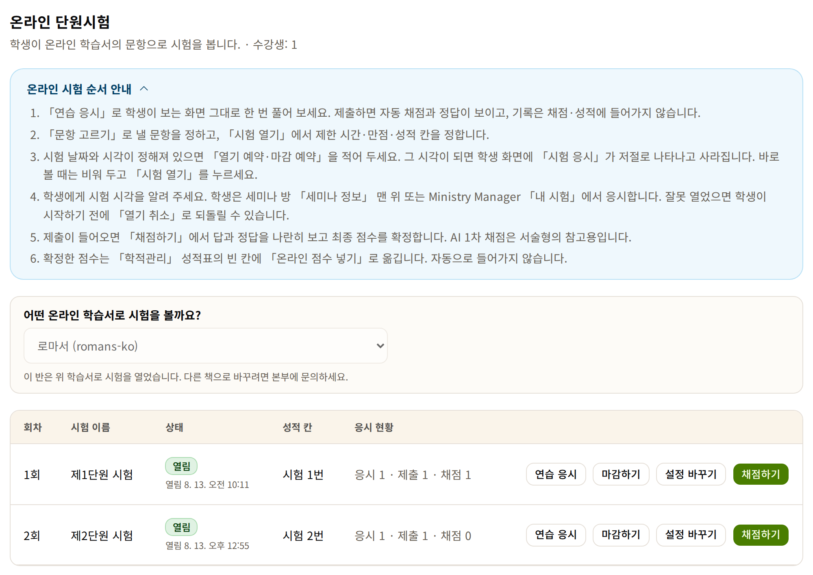
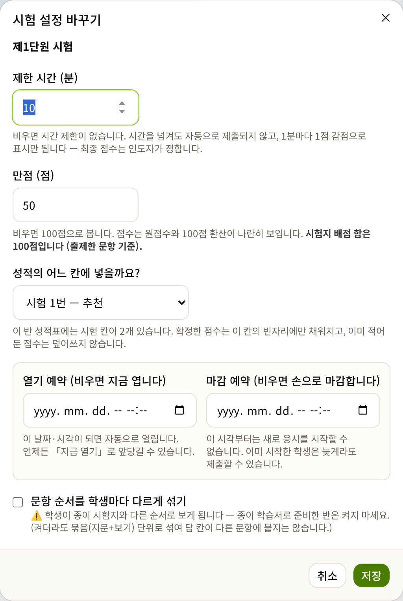
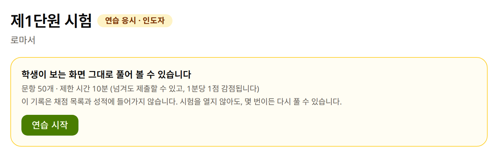
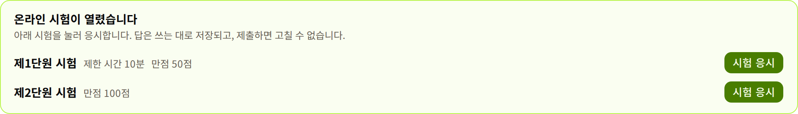
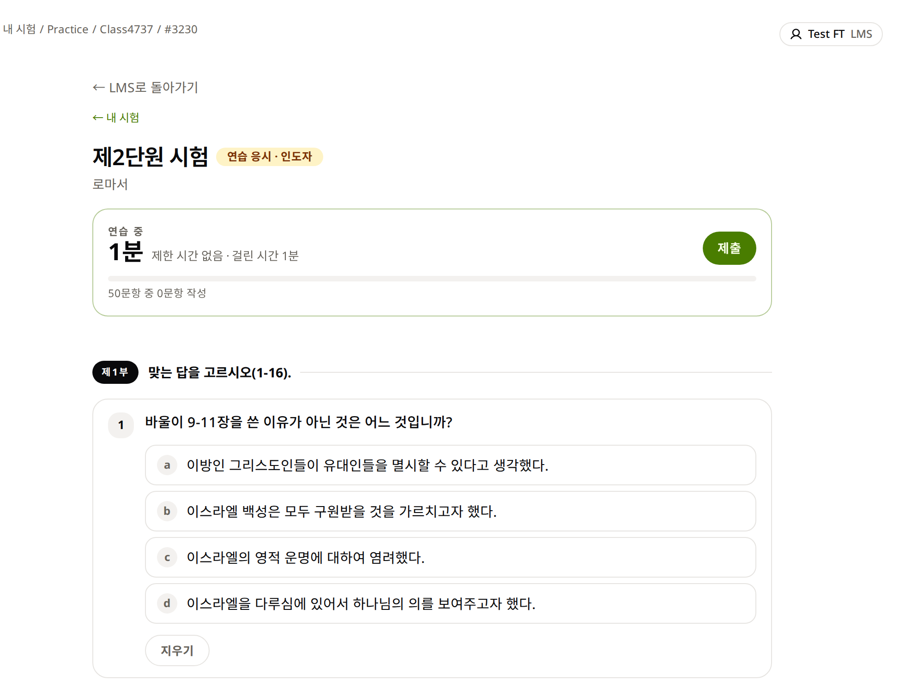
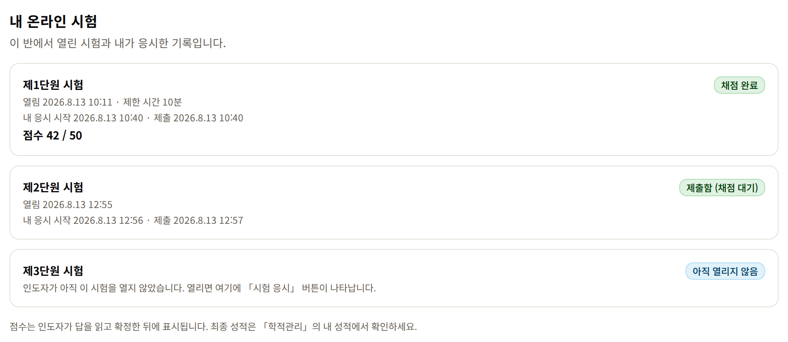
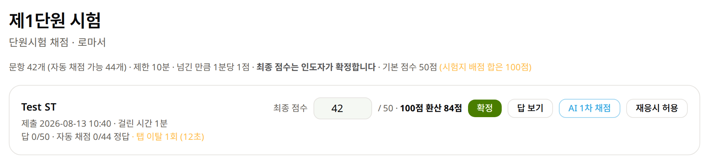
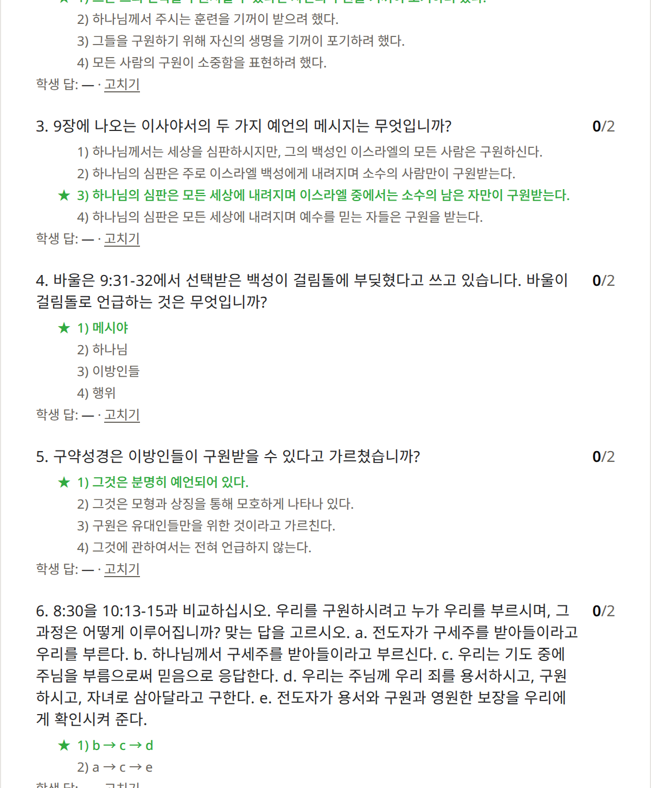
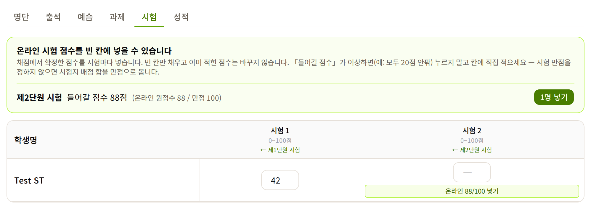

← 인도자 세미나 방 안내로 돌아가기
막혔을 때 — 화면에 보이는 글자로 찾으십시오
학생이나 지부에서 「시험이 안 돼요」라고 하면, 학생 화면에 무엇이 보이는지 먼저 물어보십시오.
-
학생 화면에 아직 열리지 않음 (예전 글자: 「응시 기간 아님」)
인도자가 아직 시험을 열지 않았습니다. 「연습 응시」만 해 보신 경우에도 이렇게 보입니다 — 연습은 시험을 열지 않습니다.
인도자: 「온라인 시험」 탭 → 그 회차의 시험 열기
-
학생 화면에 이 반에는 아직 온라인 시험이 없습니다
이 반에서 연 시험이 하나도 없습니다.
인도자: 시험 열기 (아래 1번)
-
학생 화면에 2026.11.24 22:00 열림 처럼 날짜가 보임
인도자가 열기 예약을 해 두었습니다. 그 시각이 되면 저절로 열립니다.
기다리면 됩니다. 앞당기려면 인도자가 지금 열기
-
학생 화면에 마감됨
열렸다가 인도자가 마감했습니다(또는 마감 예약 시각이 지났습니다).
더 받아야 하면 인도자: 다시 열기
-
열었다는데 학생이 어디서 보는지 모름
따로 주소가 없습니다. 늘 다니던 세미나 방이 시험장입니다.
세미나 방 「세미나 정보」 맨 위 초록 상자 온라인 시험이 열렸습니다 → 시험 응시
-
점수를 확정했는데 성적표에 없음
확정한 점수는 성적표에 저절로 들어가지 않습니다.
「학적관리」 → 「시험」 → 빈 칸 아래 온라인 ○○ 넣기 (아래 4번)
-
학생이 실수로 일찍 제출함
「채점하기」 화면의 그 학생 카드 → 재응시 허용
-
시험을 잘못 열었음
학생이 아직 시작하지 않았으면 열기 취소 — 학생 화면에서 사라지고 설정은 남습니다
순서는 세 단계뿐입니다
- 세미나 방 → 「온라인 시험」 탭 (인도자에게만 시험을 여는 자리로 보입니다)
- 그 회차의 시험 열기 — 날짜가 정해져 있으면 「열기 예약」에 날짜·시각을 적습니다
- 시험이 끝나면 마감하기 → 채점하기 → 「학적관리」에서 온라인 ○○ 넣기
종이 학습서로 공부하는 반도 됩니다 — 같은 과목의 온라인 학습서 문항으로 시험만 온라인으로 엽니다.
1
인도자
「온라인 시험」 탭에서 시험을 엽니다
처음 들어가면 어떤 학습서로 시험을 볼지 묻습니다 — 우리 반 과목에 맞는 책이 미리 골라져 있습니다.
한 번 열면 그 책으로 고정되고, 바꾸려면 본부에 문의합니다.
탭 맨 위의 「온라인 시험 순서 안내」는 이 안내를 줄인 것입니다.

인도자의 「온라인 시험」 탭. 회차마다 상태 · 성적 칸 · 응시 현황이 보입니다.
상태가 「아직 안 열림」이면 [시험 열기], 「열림」이면 [마감하기] [설정 바꾸기] [채점하기]가 나옵니다.
시험 열기를 누르면 설정 창이 뜹니다. 연 뒤에도 설정 바꾸기로 같은 창을 엽니다.
- 제한 시간(분) — 비우면 시간 제한이 없습니다. 넘겨도 자동으로 제출되지 않고 1분마다 1점 감점으로 표시만 됩니다.
- 만점(점) — 비우면 100점. 원점수와 100점 환산이 나란히 보입니다.
- 성적의 어느 칸에 넣을까요? — 나중에 점수를 옮길 성적표의 시험 칸. 빈 칸이 추천됩니다.
- 열기 예약 · 마감 예약 — 날짜·시각을 적으면 그때 저절로 열리고 닫힙니다. 비워 두면 지금 바로 열립니다.
- 문항 순서 섞기 — 종이 학습서로 준비한 반은 켜지 마십시오(종이 시험지와 순서가 달라집니다).

시험 설정 창. 열기 예약을 비우면 지금 열리고, 적으면 그 시각에 열립니다.
「연습 응시」는 시험을 열지 않습니다
연습 응시는 학생이 보는 화면 그대로 인도자가 풀어 보는 것입니다.
채점·성적에 들어가지 않고 몇 번이든 다시 풀 수 있습니다.

연습 응시 화면. 「시험을 열지 않아도」 풀 수 있다는 말 그대로 — 여기서 풀어 봐도 학생에게는 열리지 않습니다.
연습만 하고 끝내면 학생은 시험을 못 봅니다.
학생 화면에는 아직 열리지 않음이 보입니다.
연습해 본 뒤에 꼭 「온라인 시험」 탭으로 돌아와 시험 열기를 누르십시오.
문항을 골라서 낼 수도 있습니다
기본은 그 단원 시험 문항 전부 출제입니다. 일부만 내려면 문항 고르기에서 체크를 풉니다.
이 버튼은 열기 전과 마감한 뒤에만 보입니다 — 열려 있는 동안은 문항을 바꿀 수 없습니다.
2
학생
학생은 세미나 방에서 바로 응시합니다
시험이 열리면 학생의 세미나 방 맨 위에 초록 상자가 뜹니다. 따로 주소를 알려 줄 필요가 없습니다.

학생의 세미나 방 「세미나 정보」 맨 위 — 「온라인 시험이 열렸습니다」. 시험마다 [시험 응시].
시험 응시를 누르면 문항 수와 제한 시간을 먼저 안내하고,
한 번 더 누르면 시작 시각이 기록되며 문항이 나타납니다.
답은 쓰는 대로 저장되어 인터넷이 끊겨도 남습니다. 다 쓰면 [제출] — 제출하면 고칠 수 없습니다.

응시 화면. 위에 시간과 몇 문항을 썼는지가 늘 보입니다.
(인도자 연습 응시로 찍어 「연습」 표시가 있습니다. 학생 화면에는 없습니다.)
학생은 세미나 방의 「온라인 시험」 탭에서 자기 기록과 시험이 왜 아직 안 되는지를 봅니다.

학생의 「온라인 시험」 탭. 상태 글자는 넷 중 하나입니다 —
아직 열리지 않음 ○○ 열림 마감됨 그리고 응시 뒤의 제출함 (채점 대기)·채점 완료.
(세 번째 줄 「제3단원 시험」은 설명을 위해 넣은 예시입니다.)
3
인도자
채점 — 자동 채점 위에서 인도자가 확정합니다
제출한 학생이 생기면 그 회차에 채점하기가 나옵니다(새 창).
객관식은 자동으로 미리 채점되어 있고, 인도자는 최종 점수를 쓰고 확정을 누릅니다.

학생 한 사람의 채점 카드. 제출 시각 · 걸린 시간 · 자동 채점 결과 · 시험 중 다른 화면으로 나간 횟수(탭 이탈)가 보입니다.
답 보기를 누르면 문항마다 보기 · 정답(★) · 학생 답 · 점수 칸 · 인도자 피드백이 펼쳐집니다.
서술형은 읽고 문항별 점수를 주면 위의 최종 점수에 합산됩니다. 피드백은 [확정] 뒤에 학생에게 보입니다.

답 보기 — 정답은 초록 ★, 그 아래 학생 답과 점수 칸.
- AI 1차 채점 — 서술형 점수를 AI 가 미리 매겨 줍니다. 참고용이고, 최종 점수는 언제나 인도자가 확정합니다.
- 재응시 허용 — 학생이 실수로 일찍 제출했으면 다시 볼 수 있게 열어 줍니다.
4
인도자
확정한 점수를 성적표로 옮깁니다 — 저절로 들어가지 않습니다
「학적관리」 → 「시험」을 엽니다. 시험 칸 머리에 「← 제1단원 시험」처럼 어느 온라인 시험과 이어졌는지 보이고,
확정한 점수가 있는 빈 칸 아래에 온라인 ○○ 넣기가 나옵니다. 누르면 그 칸에 들어갑니다.

「학적관리」 → 「시험」. 이미 적어 둔 점수(시험 1 의 42)는 건드리지 않고, 빈 칸에만 [온라인 ○○ 넣기]가 나옵니다.
(「88/100」은 버튼 모양을 보여 드리려고 넣은 예시입니다.)
만점이 다르면 버튼에 환산한 값이 함께 보입니다(예: 「온라인 42/50 → 84 넣기」).
학생의 최종 성적 확인은 평소와 같습니다 — 「학적관리」의 내 성적에서 봅니다.